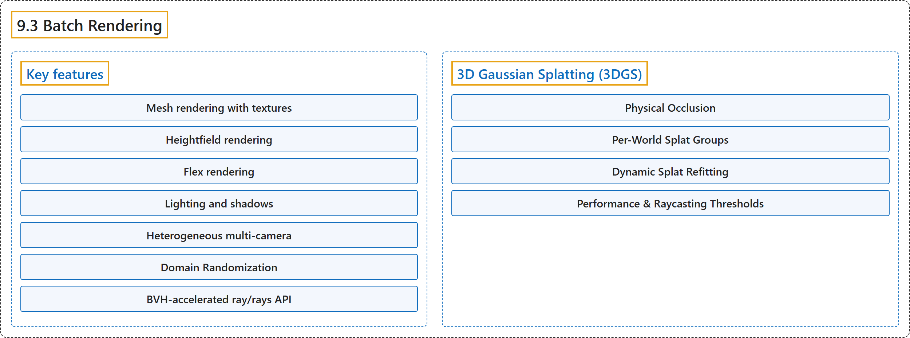

9.3 Batch Rendering
Classification

Glossary
| Term | Definition | 中文翻译 | Source |
|---|---|---|---|
| 9.3 Batch Rendering 批量渲染 |
"MJWarp provides a batch renderer for high-throughput ray tracing built on Warp’s accelerated BVHs for rendering worlds with multiple cameras in parallel." | MJWarp 提供一个用于高吞吐光线追踪的批量渲染器，它基于 Warp 加速的 BVH，可用多个相机并行渲染多个世界。 | Google DeepMind, n.d., "Batch Rendering", para. 1 |
| Key features 主要特性 |
(No definition) | （无定义） | Google DeepMind, n.d., "Batch Rendering" |
| Mesh rendering with textures 带纹理的网格渲染 |
"Mesh rendering with textures: BVH-accelerated mesh rendering with full texture support." | 带纹理的网格渲染：BVH 加速的网格渲染，完整支持纹理。 | Google DeepMind, n.d., "Batch Rendering", item 1 |
| Heightfield rendering 高度场渲染 |
"Heightfield rendering: Optimized rendering for heightfields." | 高度场渲染：针对高度场优化的渲染。 | Google DeepMind, n.d., "Batch Rendering", item 2 |
| Flex rendering 柔性体渲染 |
"Flex rendering: Render flex objects." | 柔性体渲染：渲染柔性体对象。 | Google DeepMind, n.d., "Batch Rendering", item 3 |
| Lighting and shadows 光照与阴影 |
"Lighting and shadows: Dynamic lighting with configurable shadows; domain randomizable: light_active, light_type, light_castshadow, light_xpos, light_xdir." | 光照与阴影：可配置阴影的动态光照；可做域随机化：light_active、light_type、light_castshadow、light_xpos、light_xdir。 | Google DeepMind, n.d., "Batch Rendering", item 5 |
| Heterogeneous multi-camera 异构多相机 |
"Heterogeneous multi-camera: Multiple cameras per world and each camera can have a different resolution (cam_resolution), field of view (cam_fovy, cam_sensorsize, cam_intrinsic), and output mode (cam_output)." | 异构多相机：每个世界有多个相机，每个相机可以有不同的分辨率（cam_resolution）、视场（cam_fovy、cam_sensorsize、cam_intrinsic）和输出模式（cam_output）。 | Google DeepMind, n.d., "Batch Rendering", item 6 |
| Domain Randomization 域随机化 |
"Domain Randomization: Per-world mjw.Model fields (see Batched Model Fields above): geom_matid, geom_size, geom_rgba, mat_texid, mat_texrepeat, mat_rgba." | 域随机化：按世界区分的 mjw.Model 字段（见上文的批量模型字段）：geom_matid、geom_size、geom_rgba、mat_texid、mat_texrepeat、mat_rgba。 | Google DeepMind, n.d., "Batch Rendering", item 7 |
| BVH-accelerated ray/rays API BVH 加速的 ray/rays API |
"BVH-accelerated ray/rays API: Ray casting: Accelerated mjw.ray, mjw.rays, and rangefinder sensors via Warp’s BVHs." | BVH 加速的 ray/rays API：光线投射：借助 Warp 的 BVH 加速 mjw.ray、mjw.rays 和测距传感器。 | Google DeepMind, n.d., "Batch Rendering", item 8 |
| 3D Gaussian Splatting (3DGS) 三维高斯泼溅（3DGS） |
"MJWarp supports rendering 3D Gaussian Splatting (3DGS) scenes composited with simulated physical MuJoCo objects." | MJWarp 支持渲染与仿真的 MuJoCo 物理对象合成在一起的三维高斯泼溅（3DGS）场景。 | Google DeepMind, n.d., "3D Gaussian Splatting (3DGS)", para. 1 |
| Physical Occlusion 物理遮挡 |
"If a camera ray hits a physical body (such as a mesh, primitive, or flex), splats located behind the hit distance (dist) are occluded by the physical object, while splats in front of the hit distance are blended over the physical object’s surface color." | 如果相机光线击中一个物理刚体（如网格、基本几何体或柔性体），位于击中距离（dist）之后的泼溅点会被该物理对象遮挡，而位于击中距离之前的泼溅点会混合到该物理对象的表面颜色之上。 | Google DeepMind, n.d., "Physical Occlusion", para. 1 |
| Per-World Splat Groups 按世界区分的泼溅组 |
"Similar to per-world meshes, MJWarp supports heterogeneous per-world 3DGS scenes." | 与按世界区分的网格类似，MJWarp 支持异构的、按世界区分的 3DGS 场景。 | Google DeepMind, n.d., "Per-World Splat Groups", para. 1 |
| Dynamic Splat Refitting 动态泼溅重拟合 |
(context) "If splat positions, rotations, or scales change dynamically during simulation (e.g., splats attached to moving rigid bodies), call mjw.refit_splat_bvh before rendering:" | （语境）如果泼溅点的位置、旋转或尺度在仿真中动态变化（例如附着在运动刚体上的泼溅点），应在渲染前调用 mjw.refit_splat_bvh： | Google DeepMind, n.d., "Dynamic Splat Refitting", para. 1 |
| Performance & Raycasting Thresholds 性能与光线投射阈值 |
(No definition) | （无定义） | Google DeepMind, n.d., "Performance & Raycasting Thresholds" |
| BVH Response Cutoff BVH 响应截断 |
"BVH Response Cutoff: Splat bounding boxes are sized to contain density responses down to SPLAT_MIN_RESPONSE = 0.01." | BVH 响应截断：泼溅点包围盒的大小足以包含低至 SPLAT_MIN_RESPONSE = 0.01 的密度响应。 | Google DeepMind, n.d., "Performance & Raycasting Thresholds", item 1 |
| Bounded Compositing 有界合成 |
"Bounded Compositing: Raycasting accumulates up to the first _MAX_SPLAT_HITS = 32 BVH intersections per ray ordered by depth." | 有界合成：光线投射对每条光线最多累积按深度排序的前 _MAX_SPLAT_HITS = 32 个 BVH 交点。 | Google DeepMind, n.d., "Performance & Raycasting Thresholds", item 2 |
| Early Termination 提前终止 |
"Early Termination: Compositing stops early once remaining ray transmittance drops below 0.005 or individual splat alpha is below 8-bit quantization (1 / 255)." | 提前终止：一旦剩余的光线透射率降到 0.005 以下，或单个泼溅点的 alpha 低于 8 位量化精度（1 / 255），合成就提前停止。 | Google DeepMind, n.d., "Performance & Raycasting Thresholds", item 3 |
References
Google DeepMind. (n.d.). MuJoCo Warp (MJWarp). MuJoCo Documentation (Version 3.17.0). Retrieved October 31, 2026, from https://mujoco.readthedocs.io/en/stable/mjwarp/index.html